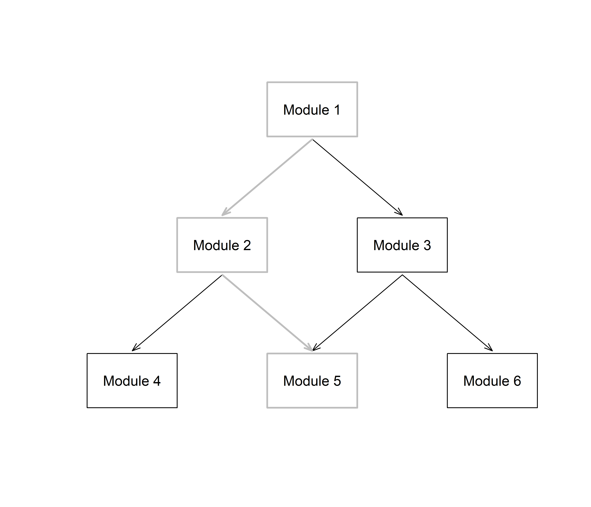
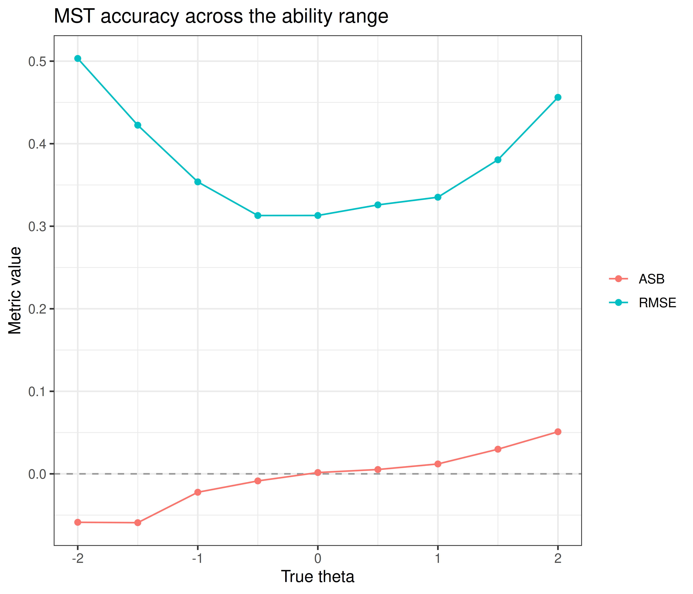
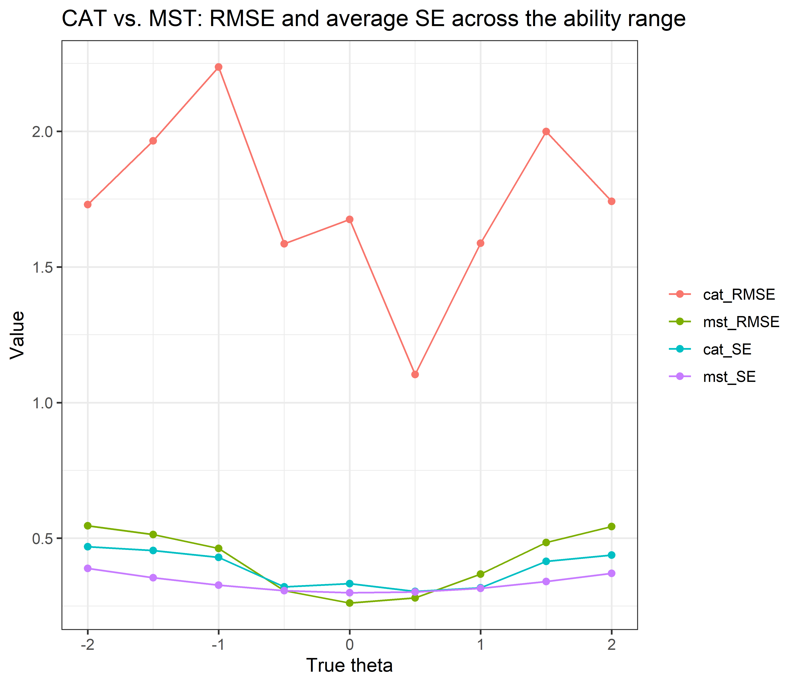

Code
# install.packages("https://cran.r-project.org/src/contrib/Archive/mstR/mstR_1.2.tar.gz")
library(mstR)
library(catR)This vignette demonstrates Multi-Stage Testing (MST) using the mstR package alongside helper functions from rwf. MST is an adaptive testing methodology that sits between traditional linear tests and fully adaptive Computerised Adaptive Testing (CAT). Instead of selecting items one at a time, MST groups items into modules and selects the next module based on the examinee’s performance on the previous one.
A typical MST design has multiple stages (e.g., stage 1 → stage 2 → stage 3) and multiple panels (parallel test forms). Stage 1 is usually a single routing module; after each stage, the examinee is routed to an easier or harder module in the next stage depending on their provisional ability estimate (θ̂). This balances measurement precision with practical constraints such as content balancing and test security.
Key concepts used throughout this vignette:
a and difficulty b).Installation instructions for rwf can be found on the rwf GitHub repository
This section constructs a small 1-2-3 MST design by hand and demonstrates the two core routing functions: startModule and nextModule.
Item bank construction: Six groups of items are generated using genDichoMatrix under the 2PL model. The difficulty priors (bPrior) are shifted so that items in different modules cover different regions of the ability scale — negative difficulties for easy modules and positive difficulties for hard modules.
Module matrix (modules): A 47×6 binary matrix assigning each of the 47 items to one of six modules. Each column is a module; a 1 indicates that item belongs to that module. colSums(modules) confirms the expected module sizes (8, 6, 6, 9, 9, 9).
Transition matrix (trans): A 6×6 binary matrix defining allowed routing paths. Here, module 1 (stage 1) can route to modules 2 or 3 (stage 2); module 2 routes to modules 4 or 5; module 3 routes to modules 5 or 6. Module 5 is reachable from both stage-2 modules, acting as the medium-difficulty path.
startModule: Returns which module to administer first given the item bank, module structure, and transition matrix. The optional fixModule argument (commented out) would force a specific starting module regardless of the design.
thetaEst: Estimates θ from the response pattern x on the first 8 items using Maximum Likelihood (ML). This estimate is then used to determine the next module.
nextModule with θ cutoffs (cut): Each row of the cutoff matrix holds two module numbers and the threshold between them; the first module is chosen if the value is strictly below the threshold, the second otherwise. At stage 2, θ < 0 → module 2 and θ ≥ 0 → module 3; at stage 3, θ < −1 → module 4, −1 ≤ θ < 1 → module 5 and θ ≥ 1 → module 6 (within the paths allowed by the transition matrix). Two calls show routing for the estimated θ and for a fixed θ of −0.2.
nextModule with score cutoffs (cut.score): Routes based on raw number-correct scores rather than θ estimates. In this case the theta argument must hold the examinee’s summed score over all administered items: here, the score on module 1 (x) plus the score on module 3 (x3), i.e. 4 + 4 = 8, which is below the threshold of 10 between modules 5 and 6, so module 5 is selected. This is useful when IRT scoring is not available or when content-balancing rules are score-based.
it.MST <- rbind(genDichoMatrix(8, model = "2PL"),
genDichoMatrix(6, model = "2PL",bPrior = c("norm", -1, 1)),
genDichoMatrix(6, model = "2PL",bPrior = c("norm", 1, 1)),
genDichoMatrix(9, model = "2PL",bPrior = c("norm", -2, 1)),
genDichoMatrix(9, model = "2PL",bPrior = c("norm", 0, 1)),
genDichoMatrix(9, model = "2PL",bPrior = c("norm", 2, 1)))
it.MST <- as.matrix(it.MST)
modules <- matrix(0, 47, 6)
modules[1:8, 1] <- 1
modules[9:14, 2] <- 1
modules[15:20, 3] <- 1
modules[21:29, 4] <- 1
modules[30:38, 5] <- 1
modules[39:47, 6] <- 1
colSums(modules)[1] 8 6 6 9 9 9$module
[1] 1
$items
[1] 1 2 3 4 5 6 7 8
$par
a b c d
[1,] 1.1151563 -0.6264538 0 1
[2,] 0.9389223 0.1836433 0 1
[3,] 1.3023562 -0.8356286 0 1
[4,] 1.0779686 1.5952808 0 1
[5,] 0.8757519 0.3295078 0 1
[6,] 0.5570600 -0.8204684 0 1
[7,] 1.2249862 0.4874291 0 1
[8,] 0.9910133 0.7383247 0 1
$thStart
[1] 0# startModule(itemBank = it.MST, modules = modules, transMatrix = trans, fixModule = 3)
x <- c(1, 1, 1, 1, 0, 0, 0, 0)
th<-mstR::thetaEst(it.MST[1:8, ], x, method = "ML")
cut <- rbind(c(2, 3, 0),
c(4, 5, -1),
c(5, 6, 1))
nextModule(itemBank = it.MST, modules = modules,transMatrix = trans, current.module = 1, out = 1:8, cutoff = cut, theta = th)$module
[1] 3
$items
[1] 15 16 17 18 19 20
$par
a b c d
[1,] 1.0974858 0.3735462 0 1
[2,] 1.1476649 1.1836433 0 1
[3,] 1.1151563 0.1643714 0 1
[4,] 0.9389223 2.5952808 0 1
[5,] 1.3023562 1.3295078 0 1
[6,] 1.0779686 0.1795316 0 1
$info
[1] 0.3654008
$criterion
[1] "cutoff"
$best.module
[1] TRUE$module
[1] 2
$items
[1] 9 10 11 12 13 14
$par
a b c d
[1,] 1.0974858 -1.6264538 0 1
[2,] 1.1476649 -0.8163567 0 1
[3,] 1.1151563 -1.8356286 0 1
[4,] 0.9389223 0.5952808 0 1
[5,] 1.3023562 -0.6704922 0 1
[6,] 1.0779686 -1.8204684 0 1
$info
[1] -0.2
$criterion
[1] "cutoff"
$best.module
[1] TRUE$module
[1] 5
$items
[1] 30 31 32 33 34 35 36 37 38
$par
a b c d
[1,] 0.9389223 -0.6264538 0 1
[2,] 1.3023562 0.1836433 0 1
[3,] 1.0779686 -0.8356286 0 1
[4,] 0.8757519 1.5952808 0 1
[5,] 0.5570600 0.3295078 0 1
[6,] 1.2249862 -0.8204684 0 1
[7,] 0.9910133 0.4874291 0 1
[8,] 0.9967619 0.7383247 0 1
[9,] 1.1887672 0.5757814 0 1
$info
[1] 8
$criterion
[1] "cutoff"
$best.module
[1] TRUEThis section runs full MST simulations using randomMST and compares MST performance against CAT using randomCAT. A 100-item bank (five distinct 2PL items recycled 20 times) is used; 90 of its items are assembled into six modules of 15 items each in a 1-2-3 design.
Item bank (it.2PL): Five 2PL items with discrimination values from 0.8 to 1.2 and difficulties spanning −0.8 to 1.1, recycled to fill a 100-item bank. Parameters c = 0 and d = 1 indicate no guessing and no slipping.
Module membership (A1–F1): Six pre-defined sets of 15 item indices each, assembled into module1. A1 is the stage-1 routing module; B1/C1 are the two stage-2 modules; D1/E1/F1 are the three stage-3 modules. Because the bank repeats only five items, the modules have nearly identical difficulty (mean b from −0.11 to 0.21), so “easier” and “harder” refer to routing position rather than to item content.
Simulation 1 — MFI module selection (mst.ex1): A single MST run at true θ = 0 using ML scoring and Maximum Fisher Information (MFI) for module selection. The two Ii() calls confirm the routing decision by comparing total Fisher information in module 2 vs. module 3 at the stage-1 θ estimate (mst.ex1$thetaProv[1], available because allTheta = TRUE) — the module with higher information should be selected. plot(mst.ex1) draws the routing path taken through the MST design.
Simulation 2 — θ cutoff routing (mst.ex2): Routes modules using θ thresholds: at stage 2, θ < 0 → module 2 and θ ≥ 0 → module 3; at stage 3, θ < −0.3 → module 4, −0.3 ≤ θ < 0.3 → module 5 and θ ≥ 0.3 → module 6 (within the paths allowed by the transition matrix). Run at true θ = 1 to verify that the design routes along the upper path (modules 1 → 3 → 6).
Simulation 3 — score cutoff routing (mst.ex3): Routes using raw number-correct score thresholds rather than θ estimates. The scoring method is set to "score" for both routing (test3) and final scoring (final3), so thFinal is the number-correct score rather than a θ estimate — useful when IRT calibration is not available at administration time.
ASB and RMSE across the ability range: A large-scale simulation (1000 replications × 9 ability levels from −2 to +2, all routed through the module1 design with BM provisional scoring and ML final scoring) estimates two accuracy metrics across the full latent trait range:
MST vs. CAT comparison: The final block compares MST (BM scoring, MFI module selection) against CAT (45-item stopping rule, BM scoring, MFI item selection, randomesque = 5 for item exposure control) across 9000 simulated examinees spanning θ from −2 to +2. Both formats administer 45 items. Each simulee’s full response pattern to the 100-item bank is generated once with genPattern and passed to both randomCAT and randomMST through responses, so the two designs are compared on the same simulated examinees. Both thFinal (final ability estimate) and seFinal (standard error of measurement) are stored in RES for comparison of precision between the two adaptive testing formats.
A1 <- c(7, 13, 14, 15, 22, 28, 34, 38, 51, 59, 70, 84, 85, 87, 89)
B1 <- c(4, 12, 19, 27, 29, 39, 43, 60, 69, 71, 72, 73, 75, 90, 97)
C1 <- c(32, 35, 36, 45, 52, 57, 61, 63, 66, 78, 81,82, 88, 92, 100)
D1 <- c(1, 2, 3, 6, 18, 21, 41, 48, 49, 50, 54, 56, 58, 65, 77)
E1 <- c(5, 16, 24, 25, 26, 37, 40, 44, 53, 68, 74, 80, 86, 91, 93)
F1 <- c(9, 11, 31, 46, 47, 55, 64, 67, 76, 79, 83, 94, 95, 98, 99)
a <- rep(c(0.8, 0.9, 1.0, 1.1, 1.2), length.out = 100)
b <- rep(c(0.0, -0.5, 1.1, -0.8, 0.7), length.out = 100)
it.2PL <- cbind(a, b, c = 0, d = 1)
module1 <- matrix(0, 100, 6)
module1[A1, 1] <- module1[B1, 2] <- module1[C1, 3] <- module1[D1, 4] <- module1[E1, 5] <- module1[F1, 6] <- 1
trans <- matrix(0, 6, 6)
trans[1, 2:3] <- trans[2, 4:5] <- trans[3, 5:6] <- 1
start <- list(theta = 0)
test <- list(method = "ML", moduleSelect = "MFI")
final <- list(method = "ML")
mst.ex1 <- randomMST(trueTheta = 0, itemBank = it.2PL, modules = module1, transMatrix = trans, genSeed = 1, start = start, test = test, final = final, allTheta = TRUE)
th1<-mst.ex1$thetaProv[1]
sum(Ii(th1, it.2PL[module1[, 2] == 1, ])$Ii)[1] 3.364019[1] 3.193589
The plot was not captured!cut <- rbind(c(2, 3, 0.0),
c(4, 5, -0.3),
c(5, 6, 0.3))
test2 <- list(method = "ML", cutoff = cut)
mst.ex2 <- randomMST(trueTheta = 1, itemBank = it.2PL, modules = module1, transMatrix = trans, genSeed = 1, start = start, test = test2, final = final)
cut2 <- rbind(c(2, 3, 7.5),
c(4, 5, 9.5),
c(5, 6, 20.5))
test3 <- list(method = "score", cutoff = cut2)
final3 <- list(method = "score")
mst.ex3 <- randomMST(trueTheta = 1, itemBank = it.2PL, modules = module1, transMatrix = trans, genSeed = 1, start = start, test = test3, final = final3)The block below runs 1000 replications at each of 9 true θ levels (from −2 to +2) through the module1 design, then computes ASB and RMSE at every level from the resulting θ estimates. Response patterns are generated once with genPattern and passed to randomMST through responses, so every simulee answers independently generated items.
s <- seq(-2, 2, 0.5)
TH <- rep(s, each = 1000)
DATA <- genPattern(TH, it.2PL, seed = 1)
RES <- matrix(NA, length(TH), 1)
start <- list(theta = 0)
test <- list(method = "BM", moduleSelect = "MFI")
final <- list(method = "ML")
for (i in 1:length(TH)){
prov <- randomMST(trueTheta = TH[i], responses = DATA[i, ],
itemBank = it.2PL, modules = module1,
transMatrix = trans, start = start,
test = test, final = final)
RES[i, 1] <- prov$thFinal
}
res.ASB <- res.RMSE <- matrix(NA, length(s), 1)
ASB <- function(t, th) mean(t-th)
RMSE <- function(t, th) sqrt(mean((t-th)^2))
for (i in 1:length(s)){
ind <- which(TH == s[i])
res.ASB[i, 1] <- ASB(RES[ind, 1], s[i])
res.RMSE[i, 1] <- RMSE(RES[ind, 1], s[i])
} theta ASB RMSE
1 -2.0 -0.058709416 0.5032773
2 -1.5 -0.059184228 0.4224322
3 -1.0 -0.022306958 0.3537456
4 -0.5 -0.008574109 0.3129722
5 0.0 0.001578738 0.3130249
6 0.5 0.005234314 0.3258625
7 1.0 0.011972593 0.3351635
8 1.5 0.029842308 0.3805290
9 2.0 0.050986488 0.4561816df_asb_rmse_long <- reshape2::melt(df_asb_rmse, id.vars = "theta", variable.name = "Metric", value.name = "value")
ggplot(df_asb_rmse_long, aes(x = theta, y = value, color = Metric)) +
geom_hline(yintercept = 0, linetype = "dashed", color = "grey60") +
geom_line() +
geom_point() +
labs(title = "MST accuracy across the ability range",
x = "True theta", y = "Metric value", color = NULL) +
theme_bw(base_size = 12)
ASB stays close to zero in the middle of the range and drifts slightly outward at the extremes (-0.06 at θ = −2, 0.05 at θ = +2), the typical outward bias of ML final estimates: very low abilities are slightly underestimated and very high abilities slightly overestimated. RMSE is lowest near the middle of the scale (0.31 at θ = -0.5) and rises to 0.5 at θ = −2 and 0.46 at θ = +2, because the bank’s item difficulties (−0.8 to 1.1) concentrate information near the middle of the scale.
This block compares MST (BM scoring, MFI module selection) against CAT (45-item stopping rule, BM scoring, MFI item selection, randomesque = 5 for item exposure control) across 9000 simulated examinees spanning θ from −2 to +2.
s <- seq(-2, 2, 0.5)
TH <- rep(s, each = 1000)
DATA <- genPattern(TH, it.2PL, seed = 1)
set.seed(1)
RES <- matrix(NA, length(TH), 4)
start.mst <- list(theta = 0)
start.cat <- list(theta = 0, randomesque = 5)
test.cat <- list(method = "BM", itemSelect = "MFI", randomesque = 5)
test.mst <- list(method = "BM", moduleSelect = "MFI")
stop <- list(rule = "length", thr = 45)
final <- list(method = "BM")
for (i in 1:length(TH)){
pr <- randomCAT(trueTheta = TH[i], responses = DATA[i, ],
itemBank = it.2PL, start = start.cat,
test = test.cat, stop = stop, final = final)
RES[i,1] <- pr$thFinal
RES[i,2] <- pr$seFinal
pr <- randomMST(trueTheta = TH[i], responses = DATA[i, ],
itemBank = it.2PL, modules = module1,
transMatrix = trans, start = start.mst,
test = test.mst, final = final)
RES[i,3] <- pr$thFinal
RES[i,4] <- pr$seFinal
}df_compare <- data.frame(
theta = TH,
cat_theta = RES[, 1],
cat_se = RES[, 2],
mst_theta = RES[, 3],
mst_se = RES[, 4]
)
summary_compare <- do.call(rbind, lapply(s, function(th) {
ind <- which(TH == th)
data.frame(
theta = th,
cat_ASB = ASB(df_compare$cat_theta[ind], th),
cat_RMSE = RMSE(df_compare$cat_theta[ind], th),
cat_SE = mean(df_compare$cat_se[ind]),
mst_ASB = ASB(df_compare$mst_theta[ind], th),
mst_RMSE = RMSE(df_compare$mst_theta[ind], th),
mst_SE = mean(df_compare$mst_se[ind])
)
}))
print(summary_compare) theta cat_ASB cat_RMSE cat_SE mst_ASB mst_RMSE mst_SE
1 -2.0 0.22347855 0.3771395 0.3397636 0.290496009 0.4370201 0.3792398
2 -1.5 0.12476902 0.3259422 0.3142375 0.151793612 0.3545498 0.3490103
3 -1.0 0.08311458 0.2902550 0.2962268 0.090564596 0.3145262 0.3226065
4 -0.5 0.03798492 0.2661801 0.2857646 0.040954528 0.2828258 0.3061756
5 0.0 0.00537849 0.2729185 0.2792596 0.001744548 0.2840831 0.2994188
6 0.5 -0.03639935 0.2733172 0.2748536 -0.042005821 0.2964399 0.3017821
7 1.0 -0.07679815 0.2696702 0.2751808 -0.091538629 0.3054833 0.3129302
8 1.5 -0.12088833 0.3003057 0.2879893 -0.155007518 0.3413419 0.3338368
9 2.0 -0.18691926 0.3422907 0.3137188 -0.260483268 0.4054961 0.3630072summary_long <- reshape2::melt(
summary_compare[, c("theta", "cat_RMSE", "mst_RMSE", "cat_SE", "mst_SE")],
id.vars = "theta", variable.name = "Metric", value.name = "value"
)
ggplot(summary_long, aes(x = theta, y = value, color = Metric)) +
geom_line() +
geom_point() +
labs(title = "CAT vs. MST: RMSE and average SE across the ability range",
x = "True theta", y = "Value", color = NULL) +
theme_bw(base_size = 12)
With both formats answering the same simulated response patterns, CAT has a lower RMSE than MST at 9 of 9 θ levels (CAT 0.27–0.38 vs. MST 0.28–0.44) and a lower average SE at 9 of 9 levels. The RMSE gap is small near the middle of the scale and largest at the extremes (0.06 at θ = 2). Both formats show the inward bias typical of BM scoring — positive ASB at low θ and negative ASB at high θ, i.e. estimates pulled toward the prior mean of 0 — and it is somewhat stronger for MST (ASB 0.29 at θ = −2 and -0.26 at θ = +2, vs. 0.22 and -0.19 for CAT). This is the expected pattern: CAT selects the single best item at every step, so it should match or beat MST’s precision — MST instead trades some of that per-item precision for the practical advantages of pre-assembled, reviewable modules (content balancing, easier quality control, and no need for real-time item-level adaptation).
This vignette worked through MST from the ground up: routing a single examinee by hand with startModule/nextModule (via both θ and raw-score cutoffs), running full simulated administrations with randomMST under three different routing rules, and evaluating a complete design’s accuracy (ASB, RMSE) across the ability range. The final comparison against catR’s randomCAT quantifies the precision MST gives up relative to fully adaptive CAT in exchange for its practical advantages — fixed, reviewable modules assembled ahead of time rather than item-by-item adaptive selection.
---
title: "MST"
author: ""
output:
html_document:
css: styles.css
theme: flatly
highlight: tango
toc: true
toc_float: true
code_folding: show
self_contained: true
vignette: >
%\VignetteIndexEntry{GLM MST}
%\VignetteEngine{knitr::rmarkdown}
%\VignetteEncoding{UTF-8}
---
```{r options,echo=FALSE,warning=FALSE,message=FALSE}
directory<-if (rstudioapi::isAvailable()) paste0(dirname(rstudioapi::getActiveDocumentContext()$path),"/") else ""
source(paste0(directory, "R/code_options.R"))
source(paste0(directory, "R/code_rwf.R"))
```
```{r library,message=FALSE,warning=FALSE}
# install.packages("https://cran.r-project.org/src/contrib/Archive/mstR/mstR_1.2.tar.gz")
library(mstR)
library(catR)
```
## Description
This vignette demonstrates Multi-Stage Testing (MST) using the `mstR` package alongside helper functions from `rwf`. MST is an adaptive testing methodology that sits between traditional linear tests and fully adaptive Computerised Adaptive Testing (CAT). Instead of selecting items one at a time, MST groups items into **modules** and selects the next module based on the examinee's performance on the previous one.
A typical MST design has multiple **stages** (e.g., stage 1 → stage 2 → stage 3) and multiple **panels** (parallel test forms). Stage 1 is usually a single routing module; after each stage, the examinee is routed to an easier or harder module in the next stage depending on their provisional ability estimate (θ̂). This balances measurement precision with practical constraints such as content balancing and test security.
Key concepts used throughout this vignette:
- **Item bank**: a pool of items described by IRT parameters (here, the 2-Parameter Logistic model — discrimination `a` and difficulty `b`).
- **Modules**: subsets of items from the bank assigned to specific positions in the MST design.
- **Transition matrix**: defines which modules can follow which — routing rules between stages.
- **Cutoff matrix**: θ or raw-score thresholds that determine which module an examinee is routed to next.
- **θ (theta)**: the latent ability, scaled here to a standard normal distribution; θ̂ denotes its estimate.
Installation instructions for rwf can be found on the [rwf GitHub repository](https://github.com/sedzinfo/rwf)
## Basic Examples
This section constructs a small 1-2-3 MST design by hand and demonstrates the two core routing functions: `startModule` and `nextModule`.
**Item bank construction**: Six groups of items are generated using `genDichoMatrix` under the 2PL model. The difficulty priors (`bPrior`) are shifted so that items in different modules cover different regions of the ability scale — negative difficulties for easy modules and positive difficulties for hard modules.
**Module matrix** (`modules`): A 47×6 binary matrix assigning each of the 47 items to one of six modules. Each column is a module; a `1` indicates that item belongs to that module. `colSums(modules)` confirms the expected module sizes (8, 6, 6, 9, 9, 9).
**Transition matrix** (`trans`): A 6×6 binary matrix defining allowed routing paths. Here, module 1 (stage 1) can route to modules 2 or 3 (stage 2); module 2 routes to modules 4 or 5; module 3 routes to modules 5 or 6. Module 5 is reachable from both stage-2 modules, acting as the medium-difficulty path.
**`startModule`**: Returns which module to administer first given the item bank, module structure, and transition matrix. The optional `fixModule` argument (commented out) would force a specific starting module regardless of the design.
**`thetaEst`**: Estimates θ from the response pattern `x` on the first 8 items using Maximum Likelihood (ML). This estimate is then used to determine the next module.
**`nextModule` with θ cutoffs** (`cut`): Each row of the cutoff matrix holds two module numbers and the threshold between them; the first module is chosen if the value is strictly below the threshold, the second otherwise. At stage 2, θ < 0 → module 2 and θ ≥ 0 → module 3; at stage 3, θ < −1 → module 4, −1 ≤ θ < 1 → module 5 and θ ≥ 1 → module 6 (within the paths allowed by the transition matrix). Two calls show routing for the estimated θ and for a fixed θ of −0.2.
**`nextModule` with score cutoffs** (`cut.score`): Routes based on raw number-correct scores rather than θ estimates. In this case the `theta` argument must hold the examinee's summed score over all administered items: here, the score on module 1 (`x`) plus the score on module 3 (`x3`), i.e. 4 + 4 = 8, which is below the threshold of 10 between modules 5 and 6, so module 5 is selected. This is useful when IRT scoring is not available or when content-balancing rules are score-based.
```{r excamples0,message=FALSE,warning=FALSE,results='hide',dev='png'}
it.MST <- rbind(genDichoMatrix(8, model = "2PL"),
genDichoMatrix(6, model = "2PL",bPrior = c("norm", -1, 1)),
genDichoMatrix(6, model = "2PL",bPrior = c("norm", 1, 1)),
genDichoMatrix(9, model = "2PL",bPrior = c("norm", -2, 1)),
genDichoMatrix(9, model = "2PL",bPrior = c("norm", 0, 1)),
genDichoMatrix(9, model = "2PL",bPrior = c("norm", 2, 1)))
it.MST <- as.matrix(it.MST)
modules <- matrix(0, 47, 6)
modules[1:8, 1] <- 1
modules[9:14, 2] <- 1
modules[15:20, 3] <- 1
modules[21:29, 4] <- 1
modules[30:38, 5] <- 1
modules[39:47, 6] <- 1
colSums(modules)
trans <- matrix(0, 6, 6)
trans[1, 2:3] <- 1
trans[2, 4:5] <- 1
trans[3, 5:6] <- 1
startModule(itemBank = it.MST, modules = modules, transMatrix = trans)
# startModule(itemBank = it.MST, modules = modules, transMatrix = trans, fixModule = 3)
x <- c(1, 1, 1, 1, 0, 0, 0, 0)
th<-mstR::thetaEst(it.MST[1:8, ], x, method = "ML")
cut <- rbind(c(2, 3, 0),
c(4, 5, -1),
c(5, 6, 1))
nextModule(itemBank = it.MST, modules = modules,transMatrix = trans, current.module = 1, out = 1:8, cutoff = cut, theta = th)
nextModule(itemBank = it.MST, modules = modules, transMatrix = trans, current.module = 1, out = 1:8, cutoff = cut, theta = -0.2)
cut.score <- rbind(c(2, 3, 5),
c(4, 5, 5),
c(5, 6, 10))
x3<-c(1,0,1,1,0,1)
nextModule(itemBank = it.MST, modules = modules, transMatrix = trans, current.module = 3, out = c(1:8, 15:20), cutoff = cut.score,theta = sum(c(x,x3)))
```
## Simulation Examples
This section runs full MST simulations using `randomMST` and compares MST performance against CAT using `randomCAT`. A 100-item bank (five distinct 2PL items recycled 20 times) is used; 90 of its items are assembled into six modules of 15 items each in a 1-2-3 design.
**Item bank** (`it.2PL`): Five 2PL items with discrimination values from 0.8 to 1.2 and difficulties spanning −0.8 to 1.1, recycled to fill a 100-item bank. Parameters `c = 0` and `d = 1` indicate no guessing and no slipping.
**Module membership** (A1–F1): Six pre-defined sets of 15 item indices each, assembled into `module1`. A1 is the stage-1 routing module; B1/C1 are the two stage-2 modules; D1/E1/F1 are the three stage-3 modules. Because the bank repeats only five items, the modules have nearly identical difficulty (mean b from −0.11 to 0.21), so "easier" and "harder" refer to routing position rather than to item content.
**Simulation 1 — MFI module selection** (`mst.ex1`): A single MST run at true θ = 0 using ML scoring and Maximum Fisher Information (MFI) for module selection. The two `Ii()` calls confirm the routing decision by comparing total Fisher information in module 2 vs. module 3 at the stage-1 θ estimate (`mst.ex1$thetaProv[1]`, available because `allTheta = TRUE`) — the module with higher information should be selected. `plot(mst.ex1)` draws the routing path taken through the MST design.
**Simulation 2 — θ cutoff routing** (`mst.ex2`): Routes modules using θ thresholds: at stage 2, θ < 0 → module 2 and θ ≥ 0 → module 3; at stage 3, θ < −0.3 → module 4, −0.3 ≤ θ < 0.3 → module 5 and θ ≥ 0.3 → module 6 (within the paths allowed by the transition matrix). Run at true θ = 1 to verify that the design routes along the upper path (modules 1 → 3 → 6).
**Simulation 3 — score cutoff routing** (`mst.ex3`): Routes using raw number-correct score thresholds rather than θ estimates. The scoring method is set to `"score"` for both routing (`test3`) and final scoring (`final3`), so `thFinal` is the number-correct score rather than a θ estimate — useful when IRT calibration is not available at administration time.
**ASB and RMSE across the ability range**: A large-scale simulation (1000 replications × 9 ability levels from −2 to +2, all routed through the `module1` design with BM provisional scoring and ML final scoring) estimates two accuracy metrics across the full latent trait range:
- **ASB (Average Signed Bias)**: mean difference between estimated and true θ — positive values indicate systematic overestimation, negative indicate underestimation.
- **RMSE (Root Mean Square Error)**: overall estimation accuracy combining both bias and variance. Lower values indicate a more precise test design.
**MST vs. CAT comparison**: The final block compares MST (BM scoring, MFI module selection) against CAT (45-item stopping rule, BM scoring, MFI item selection, randomesque = 5 for item exposure control) across 9000 simulated examinees spanning θ from −2 to +2. Both formats administer 45 items. Each simulee's full response pattern to the 100-item bank is generated once with `genPattern` and passed to both `randomCAT` and `randomMST` through `responses`, so the two designs are compared on the same simulated examinees. Both `thFinal` (final ability estimate) and `seFinal` (standard error of measurement) are stored in `RES` for comparison of precision between the two adaptive testing formats.
```{r mst_examples,message=FALSE,warning=FALSE,results='hide',dev='png'}
A1 <- c(7, 13, 14, 15, 22, 28, 34, 38, 51, 59, 70, 84, 85, 87, 89)
B1 <- c(4, 12, 19, 27, 29, 39, 43, 60, 69, 71, 72, 73, 75, 90, 97)
C1 <- c(32, 35, 36, 45, 52, 57, 61, 63, 66, 78, 81,82, 88, 92, 100)
D1 <- c(1, 2, 3, 6, 18, 21, 41, 48, 49, 50, 54, 56, 58, 65, 77)
E1 <- c(5, 16, 24, 25, 26, 37, 40, 44, 53, 68, 74, 80, 86, 91, 93)
F1 <- c(9, 11, 31, 46, 47, 55, 64, 67, 76, 79, 83, 94, 95, 98, 99)
a <- rep(c(0.8, 0.9, 1.0, 1.1, 1.2), length.out = 100)
b <- rep(c(0.0, -0.5, 1.1, -0.8, 0.7), length.out = 100)
it.2PL <- cbind(a, b, c = 0, d = 1)
module1 <- matrix(0, 100, 6)
module1[A1, 1] <- module1[B1, 2] <- module1[C1, 3] <- module1[D1, 4] <- module1[E1, 5] <- module1[F1, 6] <- 1
trans <- matrix(0, 6, 6)
trans[1, 2:3] <- trans[2, 4:5] <- trans[3, 5:6] <- 1
start <- list(theta = 0)
test <- list(method = "ML", moduleSelect = "MFI")
final <- list(method = "ML")
mst.ex1 <- randomMST(trueTheta = 0, itemBank = it.2PL, modules = module1, transMatrix = trans, genSeed = 1, start = start, test = test, final = final, allTheta = TRUE)
th1<-mst.ex1$thetaProv[1]
sum(Ii(th1, it.2PL[module1[, 2] == 1, ])$Ii)
sum(Ii(th1, it.2PL[module1[, 3] == 1, ])$Ii)
plot(mst.ex1, border.col = "grey", arrow.col = "grey")
cut <- rbind(c(2, 3, 0.0),
c(4, 5, -0.3),
c(5, 6, 0.3))
test2 <- list(method = "ML", cutoff = cut)
mst.ex2 <- randomMST(trueTheta = 1, itemBank = it.2PL, modules = module1, transMatrix = trans, genSeed = 1, start = start, test = test2, final = final)
cut2 <- rbind(c(2, 3, 7.5),
c(4, 5, 9.5),
c(5, 6, 20.5))
test3 <- list(method = "score", cutoff = cut2)
final3 <- list(method = "score")
mst.ex3 <- randomMST(trueTheta = 1, itemBank = it.2PL, modules = module1, transMatrix = trans, genSeed = 1, start = start, test = test3, final = final3)
```
### Accuracy across the ability range
The block below runs 1000 replications at each of 9 true θ levels (from −2 to +2) through the `module1` design, then computes **ASB** and **RMSE** at every level from the resulting θ estimates. Response patterns are generated once with `genPattern` and passed to `randomMST` through `responses`, so every simulee answers independently generated items.
```{r asb_rmse_sim,message=FALSE,warning=FALSE,results='hide'}
s <- seq(-2, 2, 0.5)
TH <- rep(s, each = 1000)
DATA <- genPattern(TH, it.2PL, seed = 1)
RES <- matrix(NA, length(TH), 1)
start <- list(theta = 0)
test <- list(method = "BM", moduleSelect = "MFI")
final <- list(method = "ML")
for (i in 1:length(TH)){
prov <- randomMST(trueTheta = TH[i], responses = DATA[i, ],
itemBank = it.2PL, modules = module1,
transMatrix = trans, start = start,
test = test, final = final)
RES[i, 1] <- prov$thFinal
}
res.ASB <- res.RMSE <- matrix(NA, length(s), 1)
ASB <- function(t, th) mean(t-th)
RMSE <- function(t, th) sqrt(mean((t-th)^2))
for (i in 1:length(s)){
ind <- which(TH == s[i])
res.ASB[i, 1] <- ASB(RES[ind, 1], s[i])
res.RMSE[i, 1] <- RMSE(RES[ind, 1], s[i])
}
```
```{r asb_rmse_plot,dev='png'}
df_asb_rmse <- data.frame(theta = s, ASB = res.ASB[, 1], RMSE = res.RMSE[, 1])
print(df_asb_rmse)
df_asb_rmse_long <- reshape2::melt(df_asb_rmse, id.vars = "theta", variable.name = "Metric", value.name = "value")
ggplot(df_asb_rmse_long, aes(x = theta, y = value, color = Metric)) +
geom_hline(yintercept = 0, linetype = "dashed", color = "grey60") +
geom_line() +
geom_point() +
labs(title = "MST accuracy across the ability range",
x = "True theta", y = "Metric value", color = NULL) +
theme_bw(base_size = 12)
```
ASB stays close to zero in the middle of the range and drifts slightly outward at the extremes (`r round(res.ASB[1,1],2)` at θ = −2, `r round(res.ASB[length(s),1],2)` at θ = +2), the typical outward bias of ML final estimates: very low abilities are slightly underestimated and very high abilities slightly overestimated. RMSE is lowest near the middle of the scale (`r round(min(res.RMSE[,1]),2)` at θ = `r s[which.min(res.RMSE[,1])]`) and rises to `r round(res.RMSE[1,1],2)` at θ = −2 and `r round(res.RMSE[length(s),1],2)` at θ = +2, because the bank's item difficulties (−0.8 to 1.1) concentrate information near the middle of the scale.
### MST vs. CAT comparison
This block compares MST (BM scoring, MFI module selection) against CAT (45-item stopping rule, BM scoring, MFI item selection, `randomesque = 5` for item exposure control) across 9000 simulated examinees spanning θ from −2 to +2.
```{r cat_mst_sim,message=FALSE,warning=FALSE,results='hide'}
s <- seq(-2, 2, 0.5)
TH <- rep(s, each = 1000)
DATA <- genPattern(TH, it.2PL, seed = 1)
set.seed(1)
RES <- matrix(NA, length(TH), 4)
start.mst <- list(theta = 0)
start.cat <- list(theta = 0, randomesque = 5)
test.cat <- list(method = "BM", itemSelect = "MFI", randomesque = 5)
test.mst <- list(method = "BM", moduleSelect = "MFI")
stop <- list(rule = "length", thr = 45)
final <- list(method = "BM")
for (i in 1:length(TH)){
pr <- randomCAT(trueTheta = TH[i], responses = DATA[i, ],
itemBank = it.2PL, start = start.cat,
test = test.cat, stop = stop, final = final)
RES[i,1] <- pr$thFinal
RES[i,2] <- pr$seFinal
pr <- randomMST(trueTheta = TH[i], responses = DATA[i, ],
itemBank = it.2PL, modules = module1,
transMatrix = trans, start = start.mst,
test = test.mst, final = final)
RES[i,3] <- pr$thFinal
RES[i,4] <- pr$seFinal
}
```
```{r cat_mst_summary,dev='png'}
df_compare <- data.frame(
theta = TH,
cat_theta = RES[, 1],
cat_se = RES[, 2],
mst_theta = RES[, 3],
mst_se = RES[, 4]
)
summary_compare <- do.call(rbind, lapply(s, function(th) {
ind <- which(TH == th)
data.frame(
theta = th,
cat_ASB = ASB(df_compare$cat_theta[ind], th),
cat_RMSE = RMSE(df_compare$cat_theta[ind], th),
cat_SE = mean(df_compare$cat_se[ind]),
mst_ASB = ASB(df_compare$mst_theta[ind], th),
mst_RMSE = RMSE(df_compare$mst_theta[ind], th),
mst_SE = mean(df_compare$mst_se[ind])
)
}))
print(summary_compare)
summary_long <- reshape2::melt(
summary_compare[, c("theta", "cat_RMSE", "mst_RMSE", "cat_SE", "mst_SE")],
id.vars = "theta", variable.name = "Metric", value.name = "value"
)
ggplot(summary_long, aes(x = theta, y = value, color = Metric)) +
geom_line() +
geom_point() +
labs(title = "CAT vs. MST: RMSE and average SE across the ability range",
x = "True theta", y = "Value", color = NULL) +
theme_bw(base_size = 12)
```
With both formats answering the same simulated response patterns, CAT has a lower RMSE than MST at `r sum(summary_compare$cat_RMSE<summary_compare$mst_RMSE)` of `r nrow(summary_compare)` θ levels (CAT `r round(min(summary_compare$cat_RMSE),2)`–`r round(max(summary_compare$cat_RMSE),2)` vs. MST `r round(min(summary_compare$mst_RMSE),2)`–`r round(max(summary_compare$mst_RMSE),2)`) and a lower average SE at `r sum(summary_compare$cat_SE<summary_compare$mst_SE)` of `r nrow(summary_compare)` levels. The RMSE gap is small near the middle of the scale and largest at the extremes (`r round(max(summary_compare$mst_RMSE-summary_compare$cat_RMSE),2)` at θ = `r summary_compare$theta[which.max(summary_compare$mst_RMSE-summary_compare$cat_RMSE)]`). Both formats show the inward bias typical of BM scoring — positive ASB at low θ and negative ASB at high θ, i.e. estimates pulled toward the prior mean of 0 — and it is somewhat stronger for MST (ASB `r round(summary_compare$mst_ASB[1],2)` at θ = −2 and `r round(summary_compare$mst_ASB[nrow(summary_compare)],2)` at θ = +2, vs. `r round(summary_compare$cat_ASB[1],2)` and `r round(summary_compare$cat_ASB[nrow(summary_compare)],2)` for CAT). This is the expected pattern: CAT selects the single best item at every step, so it should match or beat MST's precision — MST instead trades some of that per-item precision for the practical advantages of pre-assembled, reviewable modules (content balancing, easier quality control, and no need for real-time item-level adaptation).
---
## Conclusion
This vignette worked through MST from the ground up: routing a single examinee by hand with `startModule`/`nextModule` (via both θ and raw-score cutoffs), running full simulated administrations with `randomMST` under three different routing rules, and evaluating a complete design's accuracy (ASB, RMSE) across the ability range. The final comparison against `catR`'s `randomCAT` quantifies the precision MST gives up relative to fully adaptive CAT in exchange for its practical advantages — fixed, reviewable modules assembled ahead of time rather than item-by-item adaptive selection.